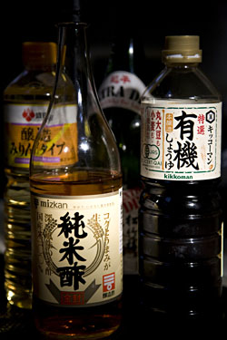

Getting StartedThis section will give you step-by-step instructions to help you get started on your culinary road to Japan. You'll not only learn about techniques, tools and shopping, you'll also learn about Japanese culture as well. I recommend that you start with the articles to the left, proceeding roughly from top to bottom. The Culture of RiceRice is so elemental to the soul of Japanese cooking that gohan, the word for rice, is synonymous with the word for meal. Indeed, the most basic meal consists of plain rice and soup, and the rest of the meal, okazu (things to go with rice) are considered to be added elements. Rice was used until modern times as currency, and is central to almost every Japanese festival and religious ceremony. Sake, which is made from rice, was thought to be a sacred liquid that had the ability to cleanse evil spirits. Sake has a close relationship with Shinto shrines, and the first brew from each region was, and still is, dedicated to the local Shinto shrine every year. Rice cultivation was also instrumental in developing Japan’s national character. Because its production is such a community effort (no one person could successfully manage it alone) cooperation and social unity were favored over individuality. And although modern Japan is light years away from its roots as a village farming society, these beliefs and qualities persist. Rice is considered so sacred that the emperor tends a small rice paddy within the grounds of the Imperial Palace, donning rubber boots to plant rice seedlings each June. Before you begin, you might want to start with this article about The Power of Five. This will give you a good road-map for your culinary journey. The simple rules outlined in the article will do more for your understanding and eventual mastery of Japanese cuisine than recipes alone. I wish someone had given me this information when I started my own education, as it would have put everything I would learn (and much of what I knew instinctively) into perspective. When you' re ready for further study, check out the Masters section, which introduces different styles and traditions of Japanese cuisine through casual interviews and firsthand encounters with some of Japan’s expert practitioners of the art. Tea: Japan's Aesthetic LifeTea, or ocha, as it is called in Japan, forms the basis for Japan’s entire aesthetic life; painting, calligraphy, gardens, architecture, poetry, ikebana, ceramics, and cuisine all trace their roots to Sado, the “way of tea.” In fact, many aspects of Japanese culture can be said to have formed from the tea culture. |
|

|